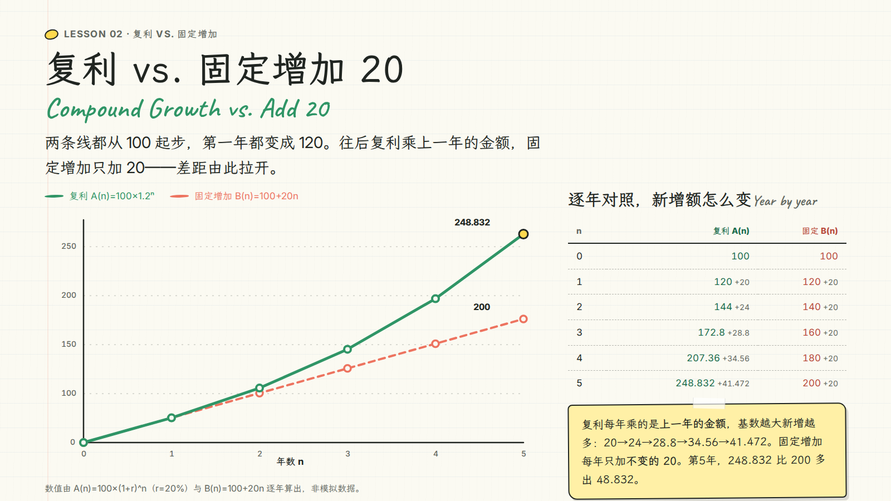
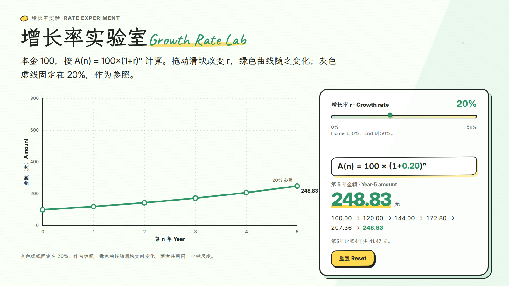
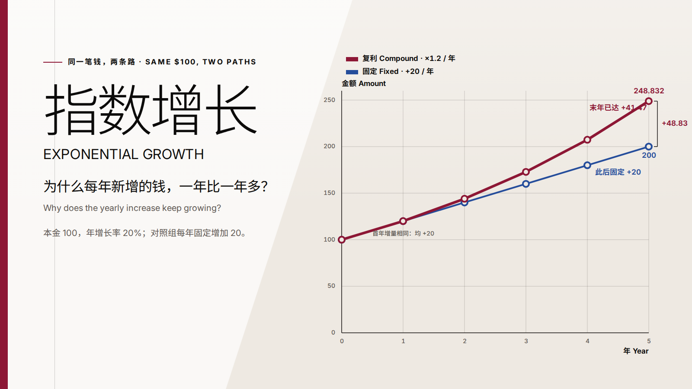
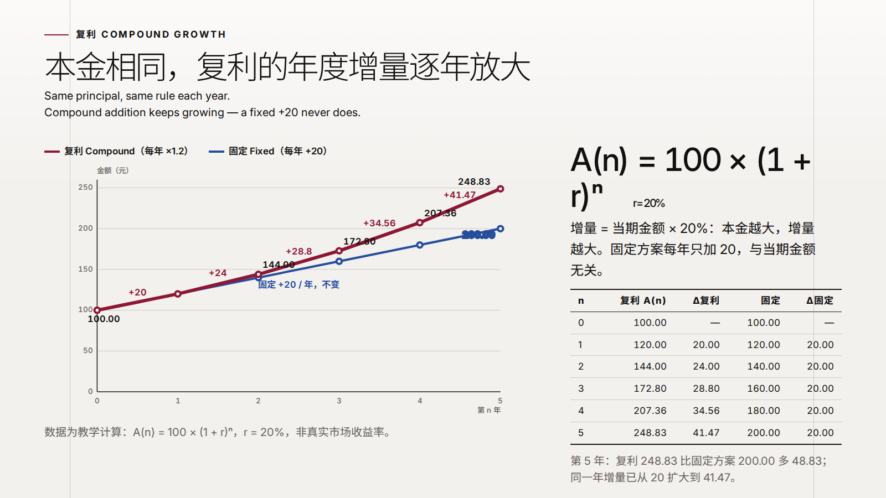

无手写成品、人工修页、换模型或失败后新建 run 补跑。截图可点击打开真实页面；未交付项保留为空。
完整实验记录与人工审阅 · 完整结果 · 冻结输入
整路：未通过。运行检查不等于内容与视觉质量通过。
RuntimeError: Planner/Director failed; see planner.log
第 1 页未交付 | 第 2 页未交付 | 第 3 页未交付 |
整路：未通过。运行检查不等于内容与视觉质量通过。
第 1 页未交付 | 第 2 页 | 第 3 页 |
整路：未通过。运行检查不等于内容与视觉质量通过。
第 1 页 | 第 2 页 | 第 3 页未交付 |